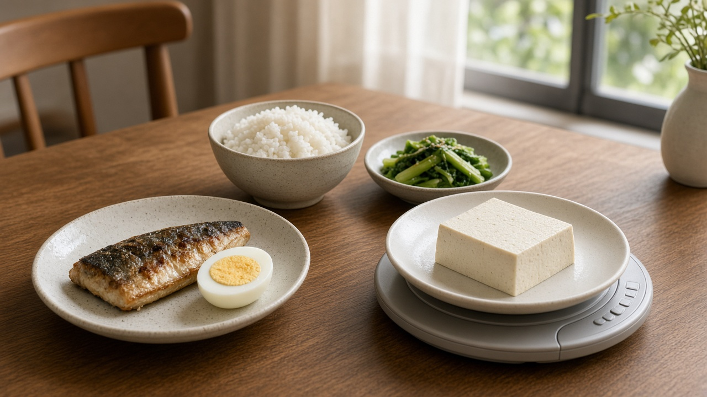
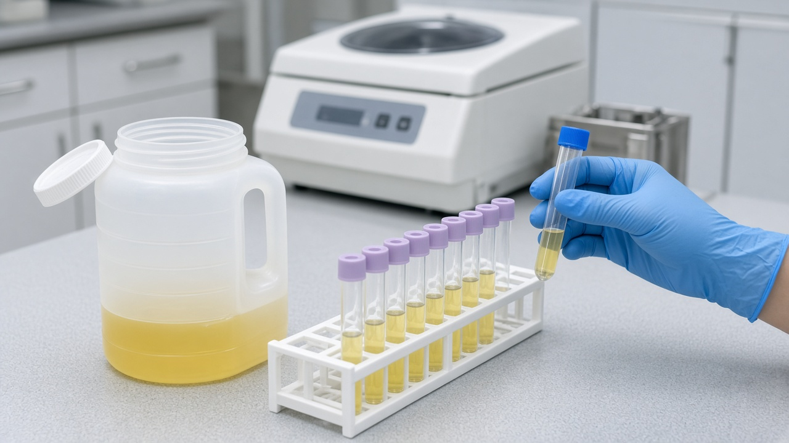

만성콩팥병이라 단백질을 확 줄였다면, 하루 체중 1킬로그램당 0.6그램 아래는 투석 위험이 더 높았어요

콩팥 수치가 나쁘다는 말을 들으면 가장 먼저 고기와 달걀부터 끊는 분들이 많죠.
콩팥에 부담을 덜 주려면 단백질을 줄여야 한다는 이야기는 오래전부터 들어 왔으니까요.
그런데 11월 10일 질병관리청 국립보건연구원이 발표한 국내 장기 추적 연구에서는 단백질을 지나치게 줄인 환자에게서 오히려 투석과 사망 위험이 더 높게 나타났어요.
어떤 연구였는지, 우리 집 식단에서는 무엇을 확인하면 좋을지 차례로 정리해 볼게요.
하루 0.6그램 미만으로 먹은 환자는 말기신부전 위험이 42퍼센트 높았어요
이번 연구는 전남대학교병원 신장내과 김수완 교수와 서상헌 교수 연구진이 진행했고, 미국의사협회가 펴내는 국제학술지 자마 네트워크 오픈에 실렸어요.
대상은 투석을 받지 않는 만성콩팥병 환자 1861명이에요.
하루 단백질 섭취량이 체중 1킬로그램당 0.6그램이 안 되는 환자는 1.2그램 이상 먹은 환자보다 투석이나 신장이식이 필요한 말기신부전으로 갈 위험이 42퍼센트 높았어요.
전체 사망 위험은 117퍼센트 높아서 약 2.2배 수준이었고요.
나이, 성별, 원래 콩팥 기능, 당뇨병 여부 같은 조건을 맞춰 계산한 뒤에도 이 차이는 남아 있었어요.
체중 60킬로그램인 분으로 바꿔 보면 하루 단백질이 36그램이 안 되는 경우가 위험이 높았던 쪽이에요.
국내 9개 대학병원 환자를 길게는 13년 가까이 지켜본 결과예요
연구진은 한국인 만성콩팥병 장기 추적 코호트에 2011년부터 2016년 사이 등록된 환자를 2024년 1월까지 따라가며 살폈어요.
환자의 평균 나이는 53.7세였고 남성이 약 60퍼센트였어요.
설문으로 먹은 양을 묻는 대신 24시간 동안 모은 소변 속 질소 양으로 실제 단백질 섭취량을 추정했다는 점도 눈여겨볼 만해요.
숫자로 보면 0.6그램 미만 그룹은 132명 가운데 61명, 약 46퍼센트가 투석이나 이식이 필요한 단계로 진행했고, 1.2그램 이상 그룹은 365명 가운데 93명, 약 26퍼센트였어요.
섭취량이 아주 낮은 구간에서 위험이 급격히 올라가는 모양이었다고 해요.
다만 심장과 혈관 질환 발생은 저단백 그룹에서 비율이 높았어도 통계적으로 뚜렷한 차이까지는 확인되지 않았어요.
그렇다고 고단백 식사를 하라는 뜻은 아니에요
이 부분을 꼭 같이 기억해 두셔야 해요.
연구를 이끈 서상헌 교수도 이번 결과가 고단백 식사를 권하는 의미는 아니라고 분명히 밝혔어요.
2024년 국제신장학회 진료지침은 투석 전 3단계에서 5단계 성인 환자에게 하루 체중 1킬로그램당 약 0.8그램을 제안하고 있어요.
체중 60킬로그램이면 하루 48그램 정도예요.
동시에 병이 진행할 위험이 있는 환자는 1.3그램을 넘는 섭취를 피하라고 하고 있어요.
결국 너무 적게도, 너무 많이도 아닌 적정량을 찾는 게 핵심이라는 이야기예요.
단백질을 지나치게 줄이면 영양이 모자라고 근육이 빠지는 상태가 올 수 있는데, 연구진은 이것이 장기적으로 콩팥과 생존에 나쁜 영향을 줄 수 있다고 설명했어요.

진료실에서 내 적정량을 물어보세요
이번 결과는 혼자 판단해 극단적으로 식단을 줄이는 것의 위험을 보여 준 연구예요.
국립보건연구원도 단백질을 극단적으로 제한하는 자의적인 식이조절을 경고했다는 데 의미를 두었어요.
다음 진료 때는 내 콩팥 기능 단계에서 하루 단백질을 얼마나 먹는 게 맞는지 숫자로 물어보시면 좋아요.
최근 체중이 눈에 띄게 줄었거나 기운이 없고 근육이 빠진 느낌이 있다면 그것도 함께 말씀해 주세요.
병원에 임상영양사 상담이 있다면 평소 식단을 기록해 가서 상담을 받아 보는 것도 방법이에요.
이 글은 연구 결과를 정리한 정보이고, 실제 섭취량은 콩팥 기능과 영양 상태, 근육량을 보고 주치의와 정하셔야 해요.
참고 자료 질병관리청 국립보건연구원 2026년 11월 10일 보도자료 만성콩팥병 환자 단백질 섭취 연구, 연합뉴스 2026년 11월 10일 만성 콩팥병 환자 단백질 무조건 줄이면 투석 사망 위험, 의학신문 2026년 11월 10일 만성콩팥병 환자 단백질 과도하게 줄이면 투석 사망 위험 높아져, 한겨레 2026년 11월 10일 전남대 연구팀 만성콩팥병 단백질 섭취 연구
태그 만성콩팥병 콩팥병식단 단백질섭취량 저단백식사 말기신부전 투석 신장내과 국립보건연구원 콩팥건강 임상영양사